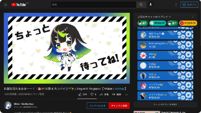

Images
This page is dedicated to showcasing how images can be displayed and interacted with.
Main Image¶
The main image (shown to the right of the word reading)
is exactly the contents of the Picture field.
As you likely already know, this image can be clicked to zoom in.
(TODO gif)
This display of the picture automatically adjusts for any aspect ratio. For the best looking cards, it is recommended that you use images with aspect ratios between 16:9 (landscape) to 1:1 (square).
(TODO screenshots)
Note
Instead of a picture, it is possible to use text within the Picture field.
This is useful if you forgot to add the picture
(or didn't want to add it in the first place),
and would like to describe the scene in words.
Do not use more than one picture, or combine pictures and text within the Picture field.
If you have an image and would like to add text,
add the text in the PrimaryDefinition or AdditionalNotes field.
If you want to add more than one image, add the remaining images under
PrimaryDefinitionPicture or PrimaryDefinition.
Automatically Add Images Using Tags¶
New in version 0.11.0.0 (latest version: 0.11.0.4)
One can automatically add a specific image if a card contains a specific tag.
This is particularily useful for cards made from written media, such as books. One can save an image of the cover (in the media folder), and add the appropriate tag to all of the cards to automatically set the image to the cover of the book.
This is specified under the runtime options:
Example:
TODO example gif
Collapsed Images¶
Any customly inserted images, including images inserted directly by Yomichan, will be converted to text which you have to hover over to reveal. Of course, this image can also be clicked on to zoom. See the video demo below to see exactly what happens.
How to Disable Collapsed Images¶
There are three ways of disabling collapsed images.
-
Place your images in the
PrimaryDefinitionPicturefield, as shown in the section below. -
To disable this for only specific images, edit the HTML of the desired field, and add
data-do-not-convert="true".An example is shown below:
-
Disable it globally in the runtime options:
The PrimaryDefinitionPicture Field¶
New in version 0.11.0.0 (latest version: 0.11.0.4)
This field can be used to place images in the Primary Definition section without collapsing the image. Large images are automatically resized to fit the area.
This is useful if one wants to put images in place of, or to suppliment definitions. For example, using images for words such as "frog" or "chair" is much easier to understand compared to using the monolingual definition.
{kind=link}
{kind=link}
{kind=link}
0.11.1.0, the size of the picture will also be slightly increased.
{kind=link}
Note
Although not recommended, the PrimaryDefinitionPicture
does not need to contain pictures.
For example, one can add text, tables, or links to the field.
Changing Automatic Positioning Behavior¶
Warning
New as of version 0.11.1.0. This version is currently bleeding edge, so this feature cannot be used unless you compile the templates from the dev branch.
There are a few runtime options that affect where the picture is positioned.
-
positionoption:The options"modules": { "img-utils": { "primary-definition-picture": { // Valid options (case sensitive): "auto-bottom", "auto-top", "bottom", "right", "top" "position": "auto-bottom", } } }bottom,right, andtopforce the image to always be placed below, to the right, and above the definition, respectively.auto-bottomis the default behavior, and will automatically position the picture below the definition if there is too little text.auto-topdoes the opposite: the picture will be positioned above the definition if there is too little text. Bothauto-bottomandauto-topwill position the picture to the right if there is sufficient amounts of text. -
position-lenienceoption:This is a constant that allows the picture to be placed to the right even if the text height is positionLenience times smaller than the picture."modules": { "img-utils": { "primary-definition-picture": { // Any integer "position-lenience": ... } } }The exact formula used is the following:
-
use-lenienceoption:Setting this to false is equivalent of setting the"modules": { "img-utils": { "primary-definition-picture": { // Valid options: true, false "use-lenience": ... } } }position-lenienceto a very large number. This will cause the picture to be placed to the right if there is ANY text, and placed to the left if there is no text.
Force Positioning¶
The automatic repositioning as described above may not be perfect. Fortunately, there are ways to force the position of this image, by adding any of the following tags to the card:
img-rightforces the image to be to the right.img-bottomforces the image to be below the text.img-topforces the image to be above the text.
Image Blur¶
New in version 0.10.3.0 (latest version: 0.11.0.4)
Images on cards can be automatically blurred by marking it with a NSFW tag. To mark a card as NSFW, add any of the following tags to the card:
nsfw・NSFW・-NSFW
This behavior is disabled by default. In other words, you will not be able to blur images unless the following setting is explicitly enabled in the runtime options:
Enabling image blur (click here)
- The
img-utilsmodule must be enabled to use the image blur feature.
{kind=link}
Note
Recall that you can use custom text in the Picture field instead of having an actual picture.
This is useful if you simply don't want to save a particular image.
Change Review Session State¶
The above demo shows how you can un-blur an image temporarily. This means that if you see that card again during the same review session, the image will be blurred again.
This state can be changed for a review session. To toggle between review-session states, hover over the info circle, and click on the eyeball to the top left. This state will be maintained for the entire review session, but will be lost on the next session.
The tabs below show the available states. By default, states cycle from left to right.
{kind=link}
| Not Marked | Marked (with NSFW tag) |
|---|---|
 |
 |
| Not Marked | Marked (with NSFW tag) |
|---|---|
|  |
{kind=link}
Demos (click here)
{kind=link}
{kind=link}
Note
Both examples have the info circle toggled (clicked), so the tooltip persists.
Additional Details¶
- The eyeball to toggle the blur between an image will not be shown unless the card is marked as NSFW (or the review session state is "Always Blurred").
- Clicking on the blurred image will do nothing; you must click on the eye to un-blur the image. Forcing the user to click in a smaller area makes accidental reveals less common.
- After revealing the image, you can click on the image to zoom, as normal. You cannot click on a blurred image to zoom.
- Most things can be changed in the runtime options, including what tags can be used, the default initial state on PC/mobile, etc.
- This was heavily inspired by Marv's implementation of the same feature.